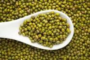

Green Grams Recipe

Description
Preparing green grams that can be cooked to eat or mix with rice
Ingredients
- 500 g green grams
- Onions
- Tomato paste.
- Dania leaves.
- royco spice
- Salt
- Cooking Dish.
Steps
- Boil the green grams in a cooking dish.
- Remove them after boiling for 3 minutes.
- Fry onions with cooking fat on a cooking dish.
- Add tomato paste and cook for 5 minutes while adding the green grams.
- Add Royco spice and salt.
- Cook for 3 minutes and add dania leaves and water.
- Food is ready.